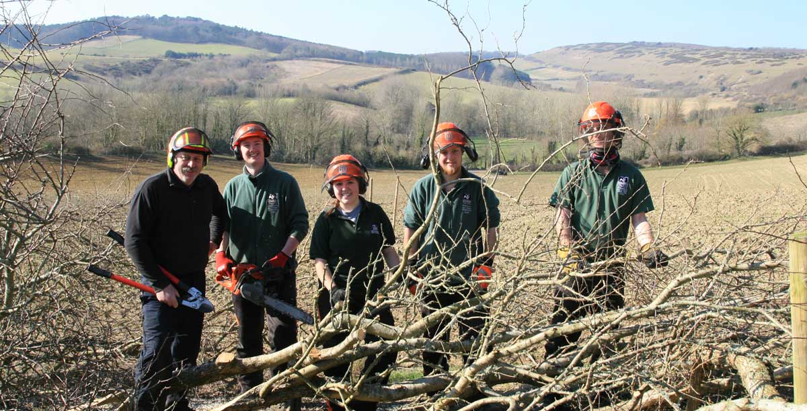

The 26th Annual Hedgelaying Competition was held on 24 February 2018 at Coombe Farm Brighstone by kind permission of Mr and Mrs James Dawes.
Lead sponsors in 2018: Landscape Therapy; Wight AONB; Pinkeye Graphics Ltd;
Supporters: DTM, JMC Hire, W Hurst & Sons

On a bitterly cold day the competition was pleased to pay its first visit to the beautiful Coombe Farm, Brighstone. The competitors assembled as the sun shone, giving spectacular views across the village and to the sea beyond. Alongside the tea tent there was a popular running display of static engines and vehicles from Vectis Vintage Tractors and Engines Club; and this year the Vectis Searchers gave an interesting demonstration of metal detecting, showing some previous finds and answering questions about their hobby.
With a short hedge this year there was some concern that pitches might be limited, but in the end every entrant on the day was able to compete. The solid hawthorn hedge had a few field maple standards throughout, and most of the competitors, including all the Open class, chose to use powered tools, leaving only three contenders for the W Hurst and Sons Cup for the best hedge laid with hand tools only. Thirteen pitches were cut, with 28 hedgelayers in total, including six teams making up the largest class.
As usual the team event was keenly fought, with a range of entrants young and old, including two teams from the Isle of Wight Young Farmers and one from the Hampshire and Isle of Wight Wildlife Trust Woodland Apprentices. The Young Farmers improved hugely on their weak performance last year, with the team led by Will Cross taking the Landscape Therapy Trophy, just ahead of the Wildlife Trust. The home team from Coombe Farm made their debut appearance in the competition, and included landowner James Dawes.
For the second consecutive year Matt Gee was the novice winner and won the Mary Sitch Cup; beating runner-up Adam Hurren. Matt also won the W Hurst and Sons cup for the best hedge laid using only hand tools.
The Open class had a majority of Island competitors, but it was two mainland guests who made their welcome return to fight out first place. Last year's champion Rob Wood failed by a single point to reclaim his laurels, being beaten into second place by Lewes man Phil Hart who lifted the AONB Cup as the 2018 Open class winner.
Results
| Position | Class | Name | Score |
|---|---|---|---|
| 1 | Open | Phil Hart | 69 |
| 2 | Open | Robert Wood | 68 |
| 3 | Open | Kingsley Hollis | 67 |
| 4 | Open | Tom Murphy | 66 |
| 5 | Open | Paul Sivell | 56 |
| 1 | Novice | Matt Gee | 54 |
| 2 | Novice | Adam Hurren | 48 |
| 1 | Team | IW Young Farmers (Will Cross) Will C, Charlie, Will E and Lily - Mae | 63 |
| 2 | Team | HIWWT Woodland Apprentices | 58 |
| 3 | Team | Pleacher Boys | 52 |
| 4 | Team | IW Young Farmers (Sam Cross) Sam, Louis, Toby and Josh | 47 |
| 5 | Team | Jailhouse Crocks | 46 |
| 6 | Team | Coombe Farm | 41 |
Winner of the W Hurst & Sons cup for the best hedge laid with hand tools:
Matt Gee
The Peter Tunks £20 note award:
An award was presented again on the day by former supreme national champion Peter Tunks, who awarded a £20 note for the straightest stakes and binding. The winner, as in 2017, was Rob Wood.
Landscape Therapy Best Isle of Wight Competitor award:
Kingley Hollis